Archived from https://takeuforward.org/data-structure/number-of-distinct-islands/
Problem Statement: Given a boolean 2D matrix grid of size N x M. You have to find the number of distinct islands where a group of connected 1s (horizontally or vertically) forms an island. Two islands are considered to be distinct if and only if one island is equal to another (not rotated or reflected).
Examples
Input:
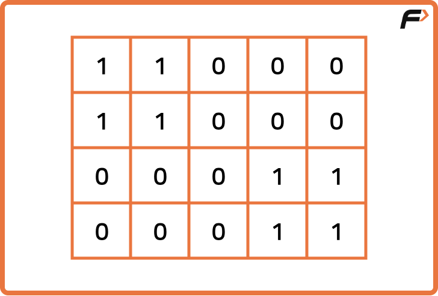
Output: 1Explanation: Island at the top left corner is the same as the island at the bottom right corner.
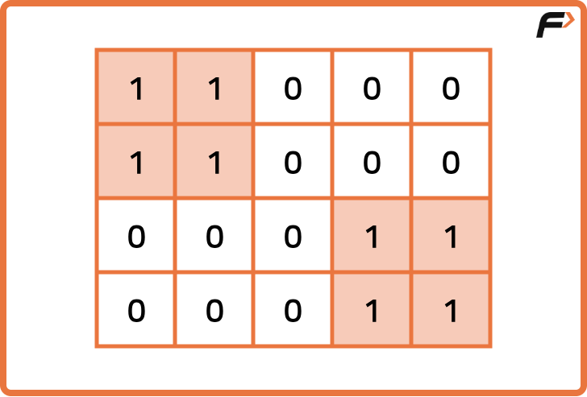
Input :
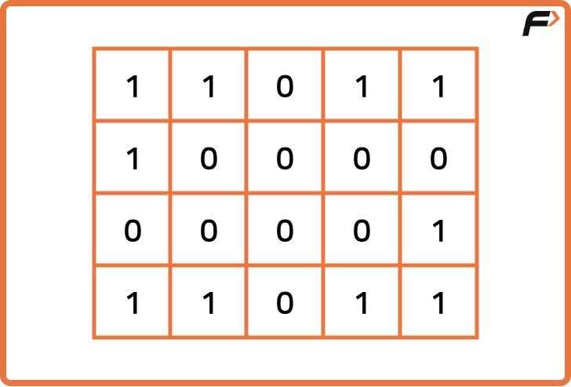
Output: 3Explanation : Island at the top right corner is the same as the island at the bottom left corner.
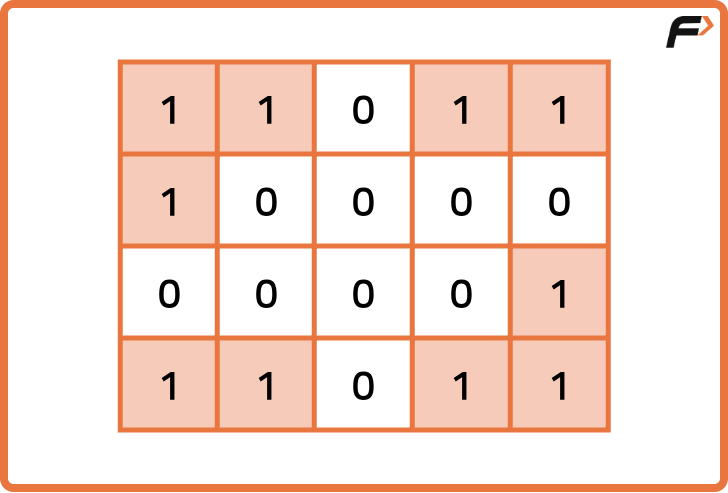
Disclaimer:
Here is the practice link to help you assess your knowledge better.
It's highly recommend trying to
solve it before looking at the solution.
Approach
Algorithm
Consider the following example, the two islands in the first figure might look identical but they are rotated so you can’t say they are the same, hence 2 distinct islands; whereas in the second figure, both islands are the same so only 1 distinct island; resulting in overall 3 distinct islands.
Depending on the shape of the island formed, we count the number of islands. To identify distinct islands, we must track the shape of each island. Two islands are identical if the relative structure are the same, even if they appear at different places on the grid.
The main idea to store shape is to store the pattern of movement (or coordinates relative to starting point) in a set while doing DFS, and use that to determine if we’ve seen this shape before.
To figure out if the coordinates stored in the set data structure are identical, we can call one of the starting points a base, and subtract the base coordinates from the land’s coordinates (Cell Coordinates - Base coordinates). Now the list will be similar as illustrated.
Traverse the entire grid using nested loops.
When an unvisited land cell (1) is found, start a DFS from that cell.
In the DFS, mark all connected land cells as visited.
While traversing the island, record the relative position of each land cell with respect to the starting cell.
Store the full list of relative positions as the island's shape.
Insert this shape into a set to ensure only distinct shapes are counted.
After completing the grid traversal, return the size of the set as the number of distinct islands.
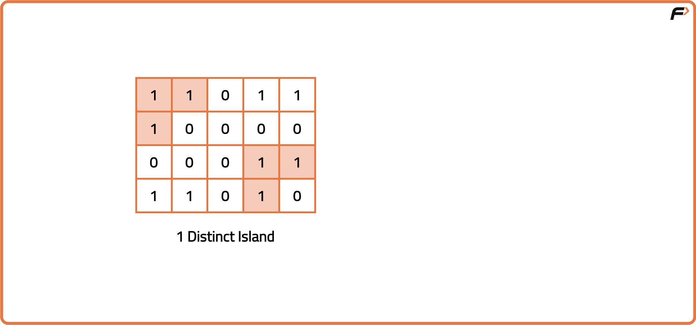
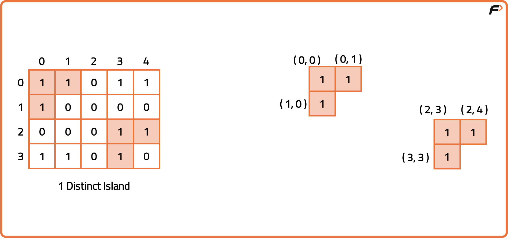
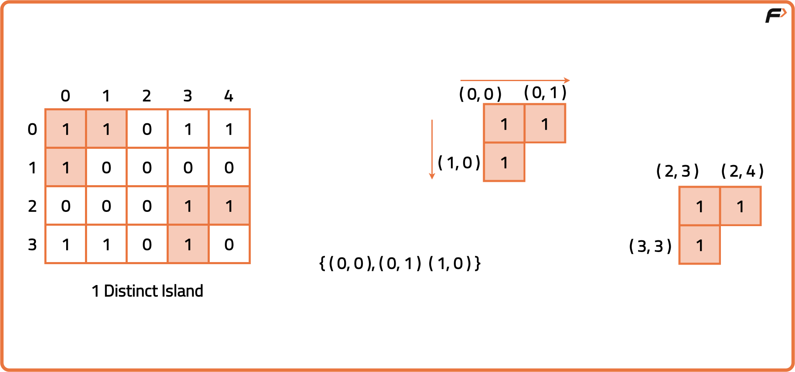
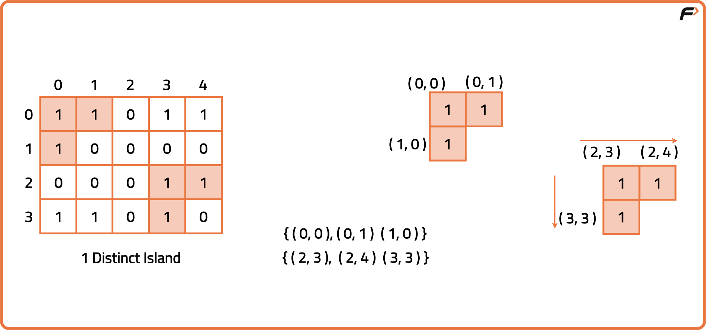
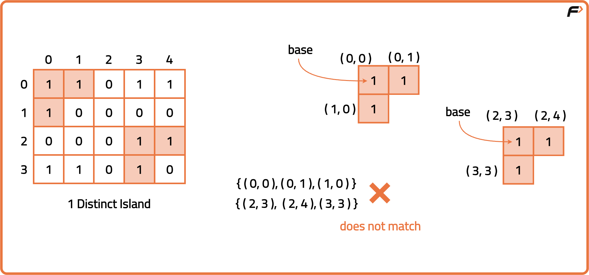
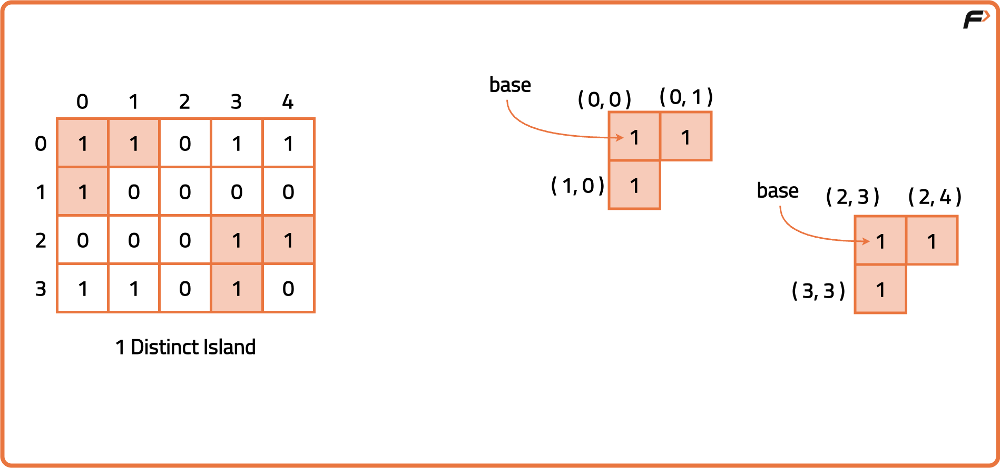
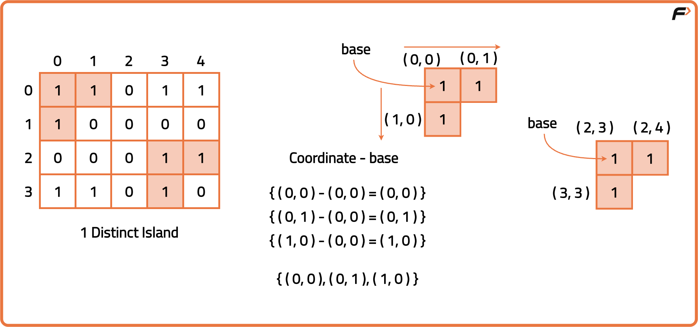
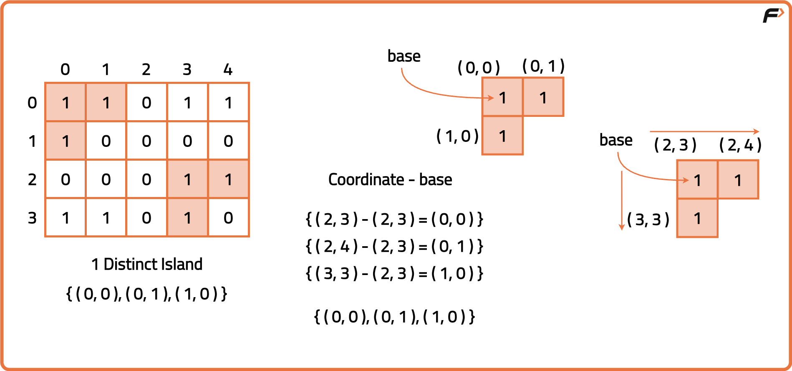
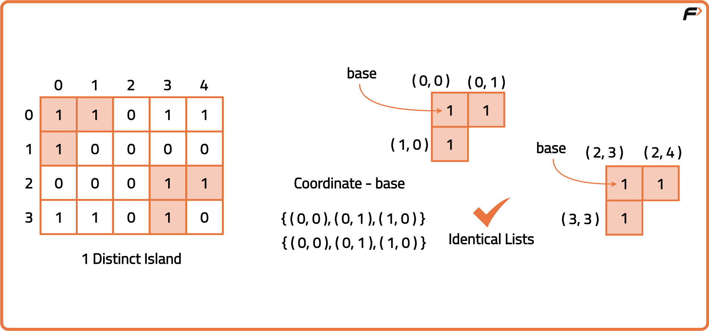
Code
#include <bits/stdc++.h>
using namespace std
class Solution {
public:
// DFS traversal
void dfs(int row, int col, int baseRow, int baseCol,
vector<vector<int>>& grid, vector<vector<int>>& vis,
vector<pair<int, int>>& shape) {
// Mark as visited
vis[row][col] = 1;
// Store relative position
shape.push_back({row - baseRow, col - baseCol});
// All 4 directions
int drow[] = {-1, 0, 1, 0};
int dcol[] = {0, 1, 0, -1};
// Explore all directions
for (int i = 0; i < 4; i++) {
int nrow = row + drow[i];
int ncol = col + dcol[i];
// Check bounds and if land and not visited
if (nrow >= 0 && nrow < grid.size() &&
ncol >= 0 && ncol < grid[0].size() &&
!vis[nrow][ncol] && grid[nrow][ncol] == 1) {
dfs(nrow, ncol, baseRow, baseCol, grid, vis, shape);
}
}
}
// Main function to return number of distinct islands
int countDistinctIslands(vector<vector<int>>& grid) {
int n = grid.size();
int m = grid[0].size();
vector<vector<int>> vis(n, vector<int>(m, 0));
set<vector<pair<int, int>>> st;
// Traverse grid
for (int i = 0; i < n; i++) {
for (int j = 0; j < m; j++) {
// If land and not visited
if (grid[i][j] == 1 && !vis[i][j]) {
vector<pair<int, int>> shape;
dfs(i, j, i, j, grid, vis, shape);
st.insert(shape);
}
}
}
return st.size();
}
};
// Driver code
int main() {
vector<vector<int>> grid = {
{1, 1, 0, 0},
{1, 0, 0, 0},
{0, 0, 1, 1},
{0, 0, 1, 1}
};
Solution obj;
cout << obj.countDistinctIslands(grid);
return 0;
}
// Class to find number of distinct islands
class Solution {
// DFS function
public void dfs(int row, int col, int baseRow, int baseCol,
int[][] grid, boolean[][] vis, List<String> shape) {
// Mark visited
vis[row][col] = true;
// Add relative position
shape.add((row - baseRow) + "_" + (col - baseCol));
// 4 directions
int[] drow = {-1, 0, 1, 0};
int[] dcol = {0, 1, 0, -1};
// Traverse directions
for (int i = 0; i < 4; i++) {
int nrow = row + drow[i];
int ncol = col + dcol[i];
// Check bounds and if land and not visited
if (nrow >= 0 && nrow < grid.length &&
ncol >= 0 && ncol < grid[0].length &&
grid[nrow][ncol] == 1 && !vis[nrow][ncol]) {
dfs(nrow, ncol, baseRow, baseCol, grid, vis, shape);
}
}
}
// Main function to return number of distinct islands
public int countDistinctIslands(int[][] grid) {
int n = grid.length;
int m = grid[0].length;
boolean[][] vis = new boolean[n][m];
Set<List<String>> set = new HashSet<>();
// Traverse the grid
for (int i = 0; i < n; i++) {
for (int j = 0; j < m; j++) {
// If land and not visited
if (grid[i][j] == 1 && !vis[i][j]) {
List<String> shape = new ArrayList<>();
dfs(i, j, i, j, grid, vis, shape);
set.add(shape);
}
}
}
return set.size();
}
}
// Main class
public class Main {
public static void main(String[] args) {
int[][] grid = {
{1, 1, 0, 0},
{1, 0, 0, 0},
{0, 0, 1, 1},
{0, 0, 1, 1}
};
Solution obj = new Solution();
System.out.println(obj.countDistinctIslands(grid));
}
}
# Class to find number of distinct islands
class Solution:
# DFS function
def dfs(self, row, col, baseRow, baseCol, grid, vis, shape):
# Mark visited
vis[row][col] = True
# Add relative position
shape.append((row - baseRow, col - baseCol))
# 4 directions
drow = [-1, 0, 1, 0]
dcol = [0, 1, 0, -1]
# Explore all directions
for i in range(4):
nrow = row + drow[i]
ncol = col + dcol[i]
# Check bounds and unvisited land
if (0 <= nrow < len(grid) and 0 <= ncol < len(grid[0]) and
not vis[nrow][ncol] and grid[nrow][ncol] == 1):
self.dfs(nrow, ncol, baseRow, baseCol, grid, vis, shape)
# Main function to count distinct islands
def countDistinctIslands(self, grid):
n, m = len(grid), len(grid[0])
vis = [[False for _ in range(m)] for _ in range(n)]
st = set()
# Traverse grid
for i in range(n):
for j in range(m):
if grid[i][j] == 1 and not vis[i][j]:
shape = []
self.dfs(i, j, i, j, grid, vis, shape)
st.add(tuple(shape))
return len(st)
# Driver code
grid = [
[1, 1, 0, 0],
[1, 0, 0, 0],
[0, 0, 1, 1],
[0, 0, 1, 1]
]
obj = Solution()
print(obj.countDistinctIslands(grid))
// Class to find number of distinct islands
class Solution {
// DFS function
dfs(row, col, baseRow, baseCol, grid, vis, shape) {
// Mark visited
vis[row][col] = true;
// Store relative coordinates
shape.push([row - baseRow, col - baseCol]);
// Directions
const drow = [-1, 0, 1, 0];
const dcol = [0, 1, 0, -1];
// Explore directions
for (let i = 0; i < 4; i++) {
const nrow = row + drow[i];
const ncol = col + dcol[i];
// Check bounds and land
if (nrow >= 0 && nrow < grid.length &&
ncol >= 0 && ncol < grid[0].length &&
grid[nrow][ncol] === 1 && !vis[nrow][ncol]) {
this.dfs(nrow, ncol, baseRow, baseCol, grid, vis, shape);
}
}
}
// Main function to count distinct islands
countDistinctIslands(grid) {
const n = grid.length;
const m = grid[0].length;
const vis = Array.from({ length: n }, () => Array(m).fill(false));
const set = new Set();
// Traverse grid
for (let i = 0; i < n; i++) {
for (let j = 0; j < m; j++) {
if (grid[i][j] === 1 && !vis[i][j]) {
const shape = [];
this.dfs(i, j, i, j, grid, vis, shape);
set.add(JSON.stringify(shape));
}
}
}
return set.size;
}
}
// Driver code
const grid = [
[1, 1, 0, 0],
[1, 0, 0, 0],
[0, 0, 1, 1],
[0, 0, 1, 1]
];
const obj = new Solution();
console.log(obj.countDistinctIslands(grid));
Complexity Analysis
Time Complexity: O(N*M), DFS traversal and marking visited cells dominate. Space Complexity: O(N*M), or visited grid and set storing unique island shapes.